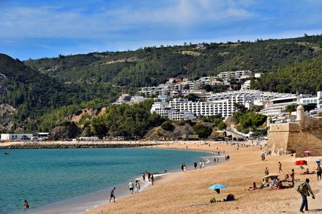
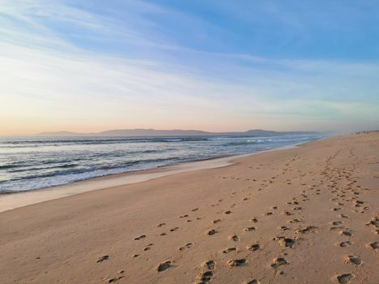
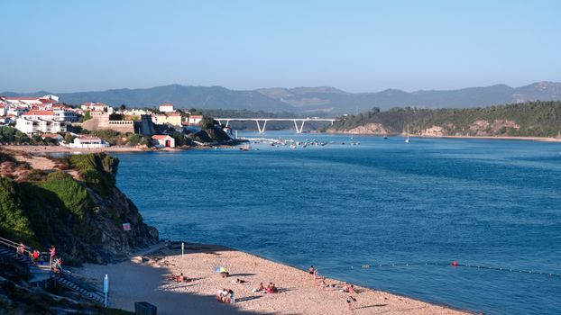
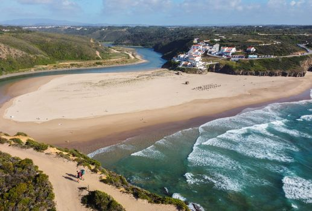
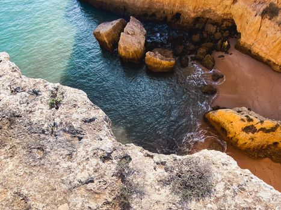

Photo: urtimud.89 / Pexels
Most Portugal itineraries land in Lisbon and drive straight to the Algarve, treating the coast in between as a gap to cross rather than a place to stop. That stretch, down through the Alentejo coastline, is where the towns get smaller, the roads get quieter, and the coast stops being a resort strip.
A car is close to essential for this stretch: train and bus coverage thins out fast once you're past greater Lisbon, and the appeal of these towns is largely in the drive between them.
-

SesimbraA working fishing town reached by a cliff road, the first sign the coast is about to get quieter. -

ComportaRice fields run right up to the dunes here, a different landscape from the cliffs to the north and south of it. -

Vila Nova de MilfontesBuilt where a river meets the sea. The town sits on the estuary, not directly on the open coast. -

OdeceixeThe beach here sits in the river mouth itself, one side calm and river-fed, the other open ocean. -

LagosThe end of the quiet Alentejo stretch and the start of the more built-up Algarve.
Stop photos: Jeffrey Eisen, H Matias, Nils Rotura, Rodrigo Curi, Rick Bossenbroek / Pexels
Treat this as a slow drive rather than a straight shot to the Algarve. The towns are small enough to see on foot quickly, but the coastline between them is worth not rushing.
Good to know before you drive it
- The main road through this stretch, the N120, runs inland. It doesn't hug the coast, so you have to turn off it into each town to actually see the water. Don't expect ocean views from the highway itself.
- Portugal's speed limit is 90 km/h on national roads like the N120, dropping to 50 km/h through towns. It's enforced with fixed and mobile radar, not just at the border.
- Some of the roads leading to the beaches themselves narrow down fast and a few stretches near the smaller towns are unpaved. Nothing that needs a 4x4, just worth slowing down for.
- 302 km is a short drive on paper, but five towns in one day means you're mostly driving past them. Two to three days lets you actually get out of the car at each stop.
Ready to book this drive? This route runs 302 km and about 4.7 hours behind the wheel, entirely inside Auto Europe's coverage area.
We book through Auto Europe. It compares Hertz, Sixt and the other major agencies in one search, with cross-border and one-way terms visible before checkout instead of buried in each company's own fine print.
Compare car rental prices →This is an affiliate link. Booking through it may earn Travel Gap a commission at no extra cost to you.
Read the full Europe road trip planning guide for what to check before you book anywhere on the continent.